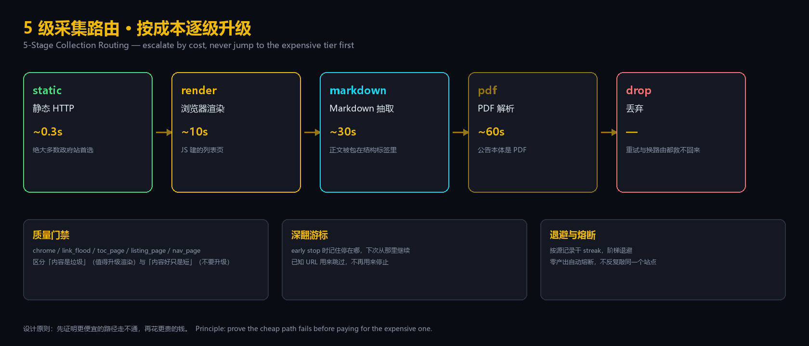
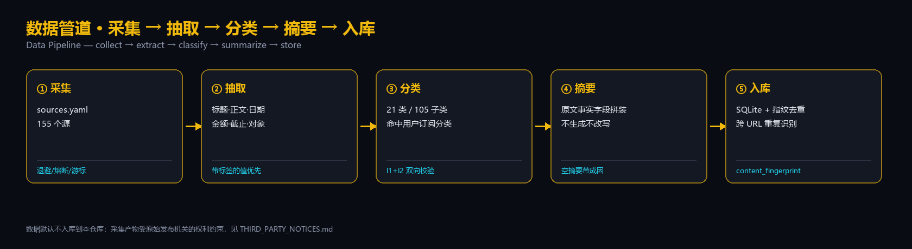
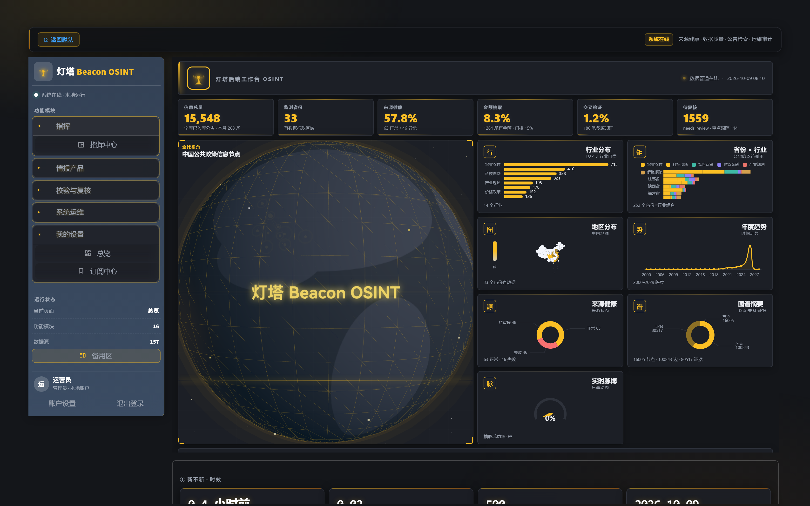
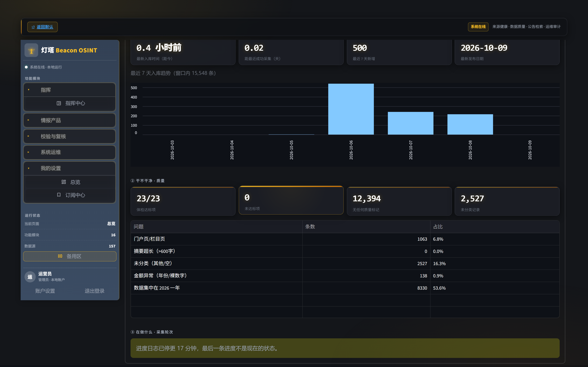

从国家部委、省级厅局到市级部门，持续抓取 · 抽取 · 分类 · 摘要
Collect · Extract · Classify · Summarize — Chinese government-affairs information
不生成内容、不改写原文、不推测缺失字段
按退避阶梯回访，每个源都有干 streak 记录；零产出自动熔断，不反复敲同一个站点。
发布日期、金额、截止时间、申报对象、责任机构——全部来自原文带标签的值，不做推断。
21 个一级分类 / 105 个二级分类，一级与二级都必须命中；纯正文指纹跨 URL 识别重复。
由原文事实字段拼装而成，不是模型改写。抽不出就留空并写明成因，不编内容。
先证明更便宜的路径走不通，再花更贵的钱


暗色金线主题 · 深色下依然可读


155 个源，每个都经过「探列表页 + 实跑抽取」双重验证才启用
| 层级 | 覆盖 | 示例 |
|---|---|---|
| 国家部委 | national ministries | 医保 · 知识产权 · 自然资源 · 市场监管 · 统计 · 人民银行 |
| 省级厅局 | provincial departments | 市场监管 · 发改 · 工信 · 农业农村 · 生态环境 |
| 市级部门 | municipal bureaus | 苏州工信 · 深圳住建 · 南京发改 |
它们不报错，只让判断偏掉
| 指标 | 修前 | 修后 |
|---|---|---|
| 二级分类越界（挂错父类） | 989 (6.55%) | 0 |
| 二级分类为空 | 112 | 0 |
| 空摘要（字段满、内容空） | 1558 (10.3%) | 94 (0.62%) |
| 附件下载率 | 0.0175 < 0.03 | 0.0473 |
| 发布日期覆盖率 | 0.9392 | 0.9676 |
Python 3.10+ · Windows 为主要运行环境
git clone https://github.com/matou1118/beacon-osint.git cd beacon-osint pip install -r requirements.txt playwright install chromium # 启动界面（首次启动自动建库） streamlit run app.py # 试跑一轮采集：只报告不落库 python lighthouse/run.py --dry-run --sources moa_gov --archive-pages 30 # 数据自检 python scripts/data_health.py pytest tests lighthouse/tests
✓ 允许使用 / 复制 / 修改 / 再分发 / 二次开发
✗ 禁止任何商业用途（含技术服务收费、付费订阅、商业产品）
Use, modify and fork freely — no commercial use.
第三方组件（ECharts / three.js / 行政区划 GeoJSON）适用其各自许可。 本仓库不包含任何采集到的政务公告原文或数据库。
From ministries to provincial departments to municipal bureaus — collect, extract, classify, summarize
聚焦中国政务公共信息 · 自用 · 可二次开发 · 禁止商用
No generated content, no rewriting, no guessing missing fields
Sources are revisited on a backoff ladder with per-source dry-streak tracking. Zero-output sources are circuit-broken automatically — we stop knocking on the same door.
Publication date, amount, deadline, target group, issuing body — every value comes from a labelled field in the original document. Nothing is inferred.
21 top-level / 105 subcategories; both levels must match. Content fingerprints identify duplicates across differing URLs.
Assembled from factual fields in the source text — not model paraphrase. When nothing can be extracted, the summary stays empty and says why. We never invent content.
Prove the cheap path fails before paying for the expensive one
Dark theme with gold accents — still legible on a dark background
155 sources, each validated twice — a list-page probe plus a real extraction run
| Level | Coverage | Examples |
|---|---|---|
| National ministries | national ministries | Healthcare Security · Intellectual Property · Natural Resources · Market Regulation · Statistics · PBOC |
| Provincial departments | provincial departments | Market Regulation · NDRC · Industry & IT · Agriculture · Ecology |
| Municipal bureaus | municipal bureaus | Suzhou II&T · Shenzhen Housing · Nanjing NDRC |
They never raise an error — they just skew your judgement
| Metric | Before | After |
|---|---|---|
| Subcategory violations (wrong parent) | 989 (6.55%) | 0 |
| Empty subcategory | 112 | 0 |
| Empty summaries (field set, content missing) | 1558 (10.3%) | 94 (0.62%) |
| Attachment download rate | 0.0175 < 0.03 | 0.0473 |
| Publication-date coverage | 0.9392 | 0.9676 |
Python 3.10+ · Windows is the primary runtime
git clone https://github.com/matou1118/beacon-osint.git cd beacon-osint pip install -r requirements.txt playwright install chromium # Launch the UI (the database is created on first run) streamlit run app.py # Dry-run a collection round: report only, no writes python lighthouse/run.py --dry-run --sources moa_gov --archive-pages 30 # Data self-checks python scripts/data_health.py pytest tests lighthouse/tests
✓ Use, copy, modify, redistribute and fork freely
✗ No commercial use whatsoever — no paid services, no subscriptions, no commercial products
允许使用、修改、再分发、二次开发；禁止任何商业用途。
Third-party components (ECharts / three.js / administrative-boundary GeoJSON) remain under their own licenses. No collected government documents or databases are distributed with this repository.